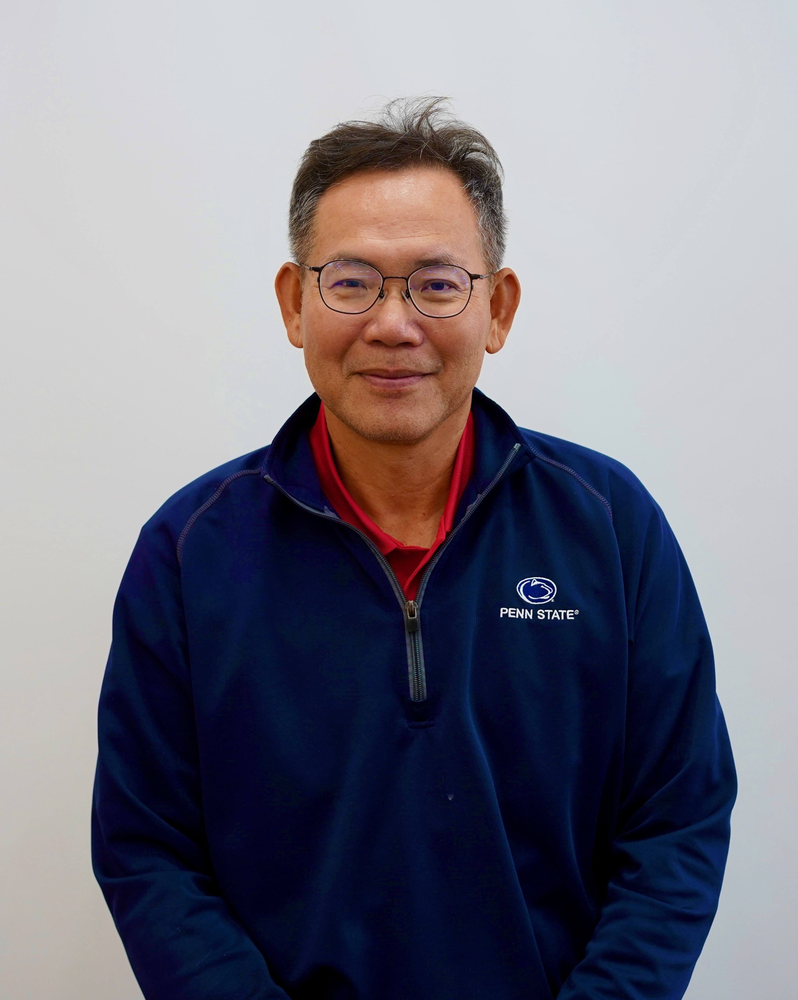

劉正毓 (Liu, Cheng-Yi)
(職稱 待補上)
個人簡介
(... 待補上 ...)
團隊人數
- 博士生: ( 待補上 ) 人
- 碩士生: ( 待補上 ) 人
研究計畫
以下為主要研究方向：
- Thin-GaN LED 製程技術開發：包括磊晶、雷射剝離與金屬電鍍製程部份，接著再進行最後之LED之光學測量，得到發光效率。
- 發光二極體LED晶片覆晶封裝：以Flip-chip封裝的結構為目標，發展一良好的散熱系統，此一系統包含一散熱良好的基材及散熱途徑。
- 電鍍雙晶銅技術：藉由開發(111)奈米雙晶銅電鍍製程來製做奈米雙晶銅膜，因為內部高能量缺陷密度的降低，能有效降低電子散射及訊號傳導的阻礙，使電流及訊號更順利通過導體內部；在高頻低損、高機械強度、低電阻率、高電遷移抗性及良好的熱穩定性的同時，維持良好可靠度。
- 低溫銅-銅直接鍵合技術：藉由實驗室開發的多種銅微結構，可以製作出適合快速介面生長的銅晶粒，實現低溫低壓的銅-銅直接鍵合技術。
- 自組裝低溫銲錫銲球：本實驗室開發一款自組裝的銲錫，將其填充在晶片與基板之間，在加熱的過程中，晶片與基板的金屬接點間形成電性通路，導電通路外圍的錫液在加熱的過程中逐漸固化，最後完成底部充填保護銲點，經此一步驟完成一般覆晶封裝的流程。
- 覆晶凸塊的電致遷移 (Electromigration) 研究：經由適當的實驗設計，得到不同銅及鎳添加量下銅錫及鎳錫合金的Z*值，而這一步建立教學的模型。同時，建立測量介金屬化合物基本性質的設備及方法，針對介金屬本身抗電遷移能力以及與銲料的濕潤性做通盤的研究，並進行電遷移效應對於銲料與介金屬界面反應的研究。
- 高介電高份子/金屬粉粒複合介電材料：將高份子/金屬粉粒材料的k值提昇，並尋找最佳的金屬摻雜徑度及尺寸，以達成與PCB相容的高介電電容材料。在學術研究上我們必須探討因為金屬粉粒摻雜所提高介電常數的細部機制。
- 奈米金屬(合金)顆粒/粉末：藉由調整反應系統中材料種類、濃度、溫度、時間等，來調整物質的長寬比，使產物具有不同的物理性質。因為其一維特性，常與高分子混合燒結成網狀薄膜，形成的交聯網絡於拉伸後仍具有良好的導電性，高孔隙率使其擁有高光穿透率且利於物質傳遞，3D結構的薄膜可增加材料的附著性。
聯絡資訊
- Email: ( 待補上 )
- 辦公室: ( 待補上 )